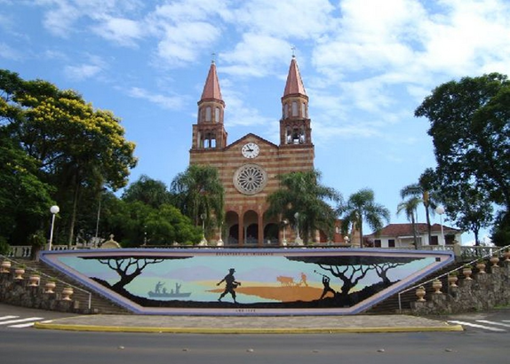

Igreja de Encantado
SOBRE O NOME ENCANTADO
Reza lenda que, ao navegar pelo rio Taquari em sua canoa, acompanhado por outros dois índios de sua tribo, um cacique chamado Maná avistou, nas proximidades da foz de um riacho, um vulto branco que, ao pressentir a aproximação dos nativos, jogou-se nas águas profundas, desaparecendo como que por encanto. Surpresos e “encantados” com aquela visão do desconhecido, só voltaram a pronunciar algumas palavras após refazerem-se do susto que, mais tarde, tornou-se uma espécie de mito. A foz acabou sendo denominada Arroio Encantado.
Houve também outras denominações dadas pelos imigrantes que fundaram o vilarejo, que chamaram o lugar de São Pedro de Encantado ou São Pedro de Valdástico, topônimos atribuídos ao local de origem desses imigrantes italianos. Mas o nome Encantado foi o que predominou.
A primeira exploração do território ocorreu em 1635, com os padres jesuítas navegando pelos rios Guaporé, rio das Antas e rio Taquari. O território, onde mais tarde surgiria Encantado, era coberto por extensas matas e habitado por indígenas. Embora não seja possível precisar as tribos às quais pertenciam, tudo leva a crer que fossem Charruas ou Tapes.
Através da criação da Lei das Terras de 1850, o governo brasileiro concedeu as terras a empresas colonizadoras. Seus donos tinham o papel de mapear e fazer a comercialização.
Em 1878, o coronel José Francisco dos Santos Pinto (dono das terras de Encantado) mapeou suas terras a fim de pudessem ser vendidas aos imigrantes ou aos migrantes oriundos de outras localidades já colonizadas. *1
A colonização e o povoamento do território ocorreram oficialmente em 1882, quando ali se estabeleceram as primeiras famílias, Lucca e Bratti, vindas da Itália. *²
O novo povoado surgiu no vasto território quase virgem, tendo ao sul a colônia alemã de Arroio do Meio. Para o norte e oeste, os povoamentos já florescentes de Soledade e Passo Fundo, visto que a colonização de Guaporé só se iniciaria em 1892. Em 1887, graças à religiosidade do povo e à iniciativa do padre Eugênio Steinnert, de Estrela, teve início um movimento para a construção do primeiro templo católico. Foi concluída a primeira igrejinha de madeira, em terreno doado, sob a invocação de São Pedro Apóstolo. Localizada onde hoje se assenta o salão paroquial, uma quadra abaixo da igreja atual.
Devido ao seu rápido desenvolvimento, Lajeado é designado município em 26 de janeiro de 1891, antes território de Estrela. A esse município integrou-se o território de Encantado, que se elevou à categoria de 2º distrito de Lajeado, pelo Ato Estadual nº 06, de 5 de janeiro de 1892. Havia no distrito de Encantado, além da sede, os seguintes povoados: São José da Anta Gorda (Borguetto), pequeno povoado no núcleo Anta Gorda, Santo Antônio do Jacaré (Relvado) e Nova Bréscia também chamado Arroio das Pedras. A 7 de Maio de 1914, uma comissão integrada pelos núcleos de Encantado, Anta Gorda e Itapuca, encaminhou ao então governador do Estado, Dr. Antônio Augusto Borges de Medeiros, memorial solicitando a criação do município, tendo por base os territórios do 2º(Encantado) e 4º (Anta Gorda) distritos de Lajeado, e 9º (Itapuca) distrito de Soledade, cuja sede ficaria em Encantado. As terras, atualmente dos municípios de Relvado e de Putinga eram de propriedade de João Batista de Mello intendente do município de Lageado na época. Em 31 de março de 1915, o Governo gaúcho publicou o Decreto Nº 2.133, elevando à categoria de Vila com a denominação de “Município de Encantado”, tendo por sede a povoação.
*¹ Obs. Pela redação do parágrafo acima, constatamos que não houve distribuição de terras gratuitas para os imigrantes(colonizadores) na região de Encantado.
*² Em 16 de junho de 1993, em reunião solene a Câmara Municipal de Encantado homologa a Lei, nº. 25, que declara “Valdástico” cidade Irmã de Encantado.